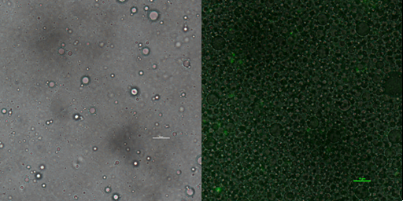

Due to TnaA can react with both tryptophan and the first step product bromotryptophan, Fre-SttH and TnaA has to be in two different strains. So the two-cell system, ΔTnaA E. coli strain without endogenous TnaA expression and another ΔTnaA E. coli strain with extra TnaA expression, are used to produce tyrian purple with less byproduct indigo. That’s why Lee et al have to use two-cell system to complete the production of tyrian purple.
Considering the problem of tryptophanase TnaA lack of specificity, we want to use muted trp repressor that can only bind trp to sense the concentration of trp and 6-Br-trp in E. coli to control the expression of TnaA. We optimized two-cell sysytem to one-cell system with a spatio-temporal well-controlled TnaA synthesis (Figure 11). We applied a synthetic phylogeny of programmable Trp repressor with directed evolution to E.coli, which simplified the process of reacting with bromotryptophan not tryptophan[3].
Compartmentalized partnered replication (CPR) is an emulsion-based directed evolution method based on a robust and modular phenotype–genotype linkage. In contrast to other in vivo directed evolution approaches, CPR largely mitigates host fitness effects due to a relatively short expression time of the gene of interest. CPR is based on gene circuits in which the selection of a 'partner' function from a library leads to the production of a thermostable polymerase. After library preparation, bacteria produce partner proteins that can potentially lead to enhancement of transcription, translation, gene regulation, and other aspects of cellular metabolism that reinforce thermostable polymerase production. Individual cells are then trapped in water-in-oil emulsion droplets in the presence of primers and dNTPs, followed by the recovery of the partner genes via emulsion PCR. In this step, droplets with cells expressing partner proteins that promote polymerase production will produce higher copy numbers of the improved partner gene. The resulting partner genes can subsequently be recloned for the next round of selection[4].
Iterative rounds of positive and negative compartmentalized partnered replication (CPR) led to the exponential amplification of variants that responded with high affinity and specificity to halogenated tryptophan analogs and novel operator sites. We empower cells to perceive the relative ratio of bromotryptophan to tryptophan to control TnaA synthesis.
Optimized reaaction scheme of one-cell system adding directed evolution
We firstly constructed three plasmids pTrpR, pPOS and pNEG. pTrpR is induced to express muted trp repressors. Active trp repressors with its ligand can induce pPOS to express Taq polymerase and inactive trp repressors or trp repressor without its ligand can induce pNEG to express Taq polymerase (Figure 12).
For GFP test of CPR cycle, we constructed pNEG-sfGFP and pPOS-sfGFP which replace Taq polymerase gene with sfGFP to characterize the expression of Taq polymerase.
For the mock selection of CPR cycle, we inserted a DNA sequence of 200bp into wild type trp repressor to construct INAC-pTrpR (Figure 18). We mix plasmid pTrpR with wild type trp repressor and INAC-pTrpR with a mass ratio of 1:1 and transform the mixture into pNEG and pPOS competent cells. Induced cells were resuspend by CPR mix and emulsion droplets were constructed by mixing CPR mix and oil mix and vortex for 4 min.
Scheme of CPR positive and negative circuits

Scheme of INAC-pTrpR construction
(1) GFP test
The expression of Taq polymerase can not be monitored easily, we apply GFP assay to use GFP production to analyzing the gene circuits function. We transform pTrpR which express wild type trp repressor into competent cells that have been transformed with plasmid pNEG-sfGFP or pPOS-sfGFP. Then we culture and induce with different concentration of trp and 1mM IPTG to induce expression of sfGFP. We expect that as trp concentration increases, the expression of sfGFP (RPU/OD600) in pNEG-sfGFP gradually decreases, and the expression of sfGFP (RPU/OD600) in pPOS-sfGFP gradually increases (Figure 19A).
(2) Mock selection
In addition to GFP test, we also perform a mock selection to confirm the designed gene circuit function can actually select positive clone. At first, we mix culture with strains that has been induced to express sfGFP and oil mix to check the quality of emulsion droplet. We measure the diameter of droplet with a phase contrast microscopy. We found that the diameter of emulsion droplets are range about 2-10 μm and less than 20% emulsion droplets contain a GFP-expression cell (Figure 19B). Thus, we have checked any emulsion droplet can only contain a single cell. We insert a random sequence into wild type trp repressor to make it inactive to bind to trp, and we get plasmid INAC-pTrpR. We mix plasmid pTrpR with wild type trp repressor and INAC-pTrpR with a mass ratio of 1:1 and transform the mixture into pNEG and pPOS competent cells. A mock CPR seletion is next carried out. Induced strains is emulsified with emulsion mix and replicate positive clone by ePCR. The emulsion remains in a phase-independent state during ePCR (Figure 19C). After breaking the emulsion by adding ddH2O and chloroform, we apply a recovery PCR and perform a agarose electrophoresis to monitor the result of the mock selection. PNEG give an obvious amplification of inactive trp repressor and pPOS give an obvious amplification of active trp repressor (Figure 19D).
GFP production (RPU/OD600) – trp concentration graph by GFP test for wild type trp repressor and pNEG (due to time and pandemic, we only completed the experiment of pNEG).

Phase contrast microscopy image of emulsion droplet of 50×diluted scale bar, 10μm (left) of emusion droplet merge with GFP expression of 1× diluted emulsion scar bar, 10μm.
From left to right: cell culture emulsified with emulsion mix; Cell emulsion after ePCR circle; Emulsion after perform centrifuge; Phase-separate solution after breaking emulsion.
result of agarose electrophoresis between trpR:INAC-trpR = 1:1 and trpR and inactive trpR after mock selection with pNEG (due to time and pandemic, we only completed the experiment of pNEG)
We found that high concentration of trp can inhibit expression of sfGFP in negative selection system. However, it can only provide about three times the inhibition effect which cannot achevie screen effect. Possibly, trp repressor has a low expression or trp repressor with trp cannot strongly bind to trp operator at DNA. Same experiments of positive selection system haven't be carry out.
Also, we have successfully make emulsion droplets of high quality. However, results of mock selection is not obvious which means selection system cannot distinguish wild type trp repressor with inactive trp repressor that consistent with results of GFP test.